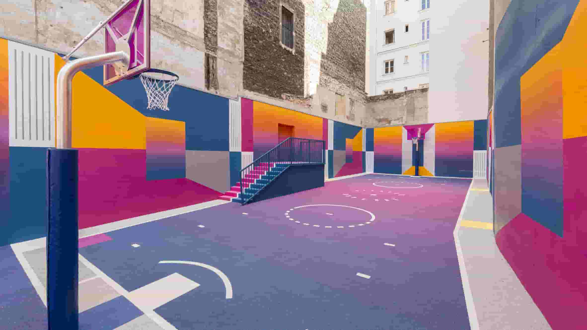

Earlier this year, the concentration of carbon dioxide in the atmosphere reached 400 parts per million (ppm). The last time there was that much CO2 in our atmosphere was three million years ago, when sea levels were 24 meters higher than they are today. Now sea levels are rising again. Last September, Arctic sea ice covered the smallest area ever recorded. All but one of the ten warmest years since 1880, when global records began to be kept, have occurred in the twenty-first century.
Pigalle Basketball court
Some climate scientists believe that 400 ppm of CO2 in the atmosphere is already enough to take us past the tipping point at which we risk a climate catastrophe that will turn billions of people into refugees.
Pigalle Basketball player
Some climate scientists believe that 400 ppm of CO2 in the atmosphere is already enough to take us past the tipping point at which we risk a climate catastrophe that will turn billions of people into refugees. They say that we need to get the amount of atmospheric CO2 back down to 350 ppm. That figure lies behind the name taken by 350.org, a grassroots movement with volunteers in 188 countries trying to solve the problem of climate change.
This is an example of Javascript code highlighting
import { Prism as SyntaxHighlighter } from "react-syntax-highlighter";
import { okaidia } from "react-syntax-highlighter/dist/cjs/styles/prism";
const SyntaxHighlight = props => {
const { value, language = null } = props;
return (
<SyntaxHighlighter language={language} style={okaidia}>
{value}
</SyntaxHighlighter>
);
};
export default SyntaxHighlight;This is an example of HTML code highlighting
<span class="status">
<svg class="status-success-icon iOutputs_checkSmall" ng-show="item.Correction === 1" >
<use xlink:href="#Outputs_checkSmall"></use>
</svg>
<svg class="status-error-icon iOutputs_cross" ng-show="item.Correction !== 1" >
<use xlink:href="#Outputs_cross"></use>
</svg>
</span>This is an example of Ruby code highlighting
File.open("ordinal").grep /d$/ do |line|
print line
endOther climate scientists are more optimistic: they argue that if we allow atmospheric CO2 to rise to 450 ppm, a level associated with a two-degree Celsius temperature rise, we have a 66.6% chance of avoiding catastrophe. That still leaves a one-in-three chance of catastrophe – worse odds than playing Russian roulette. And we are forecast to surpass 450 ppm by 2038.
One thing is clear: if we are not to be totally reckless with our planet’s climate, we cannot burn all the coal, oil, and natural gas that we have already located. About 80% of it – especially the coal, which emits the most CO2 when burned – will have to stay in the ground.
In June, US President Barack Obama told students at Georgetown University that he refused to condemn them and their children and grandchildren to “a planet that’s beyond fixing.” Saying that climate change cannot wait for Congress to overcome its “partisan gridlock,” he announced measures using his executive power to limit CO2 emissions, first from new fossil-fuel power plants, and then from existing ones.
Obama also called for an end to public financing of new coal plants overseas, unless they deploy carbon-capture technologies (which are not yet economically viable), or else there is, he said, “no other viable way for the poorest countries to generate electricity.”
According to Daniel Schrag, Director of Harvard University’s Center for the Environment and a member of a presidential science panel that has helped to advise Obama on climate change, “Politically, the White House is hesitant to say they’re having a war on coal. On the other hand, a war on coal is exactly what’s needed.”
Schrag is right. His university, like mine and many others, has a plan to reduce its greenhouse-gas emissions. Yet most of them, including Schrag’s and mine, continue to invest part of their multi-billion-dollar endowments in companies that extract and sell coal.
But pressure on educational institutions to stop investing in fossil fuels is beginning to build. Student groups have formed on many campuses, and a handful of colleges and universities have already pledged to end their investment in fossil fuels. Several US cities, including San Francisco and Seattle, have agreed to do the same.
Now financial institutions, too, are coming under fire for their involvement with fossil fuels. In June, I was part of a group of prominent Australians who signed an open letter to the heads of the country’s biggest banks asking them to stop lending to new fossil-fuel extraction projects, and to sell their stakes in companies engaged in such activities.
Speaking at Harvard earlier this year, former US Vice President Al Gore praised a student group that was pushing the university to sell its investments in fossil-fuel companies, and compared their activities to the divestment campaign in the 1980’s that helped to end South Africa’s racist apartheid policy.
How fair is that comparison? The dividing lines may be less sharp than they were with apartheid, but our continued high level of greenhouse-gas emissions protects the interests of one group of humans – mainly affluent people who are alive today – at the cost of others. (Compared to most of the world’s population, even the American and Australian coal miners who would lose their jobs if the industry shut down are affluent.) Our behavior disregards most of the world’s poor, and everyone who will live on this planet in centuries to come.
Worldwide, the poor leave a very small carbon footprint, but they will suffer the most from climate change. Many live in hot places that are getting even hotter, and hundreds of millions of them are subsistence farmers who depend on rainfall to grow their crops. Rainfall patterns will vary, and the Asian monsoon will become less reliable. Those who live on this planet in future centuries will live in a hotter world, with higher sea levels, less arable land, and more extreme hurricanes, droughts, and floods.
In these circumstances, to develop new coal projects is unethical, and to invest in them is to be complicit in this unethical activity. While this applies, to some extent, to all fossil fuels, the best way to begin to change our behavior is by reducing coal consumption. Replacing coal with natural gas does reduce greenhouse-gas emissions, even if natural gas itself is not sustainable in the long term. Right now, ending investment in the coal industry is the right thing to do.